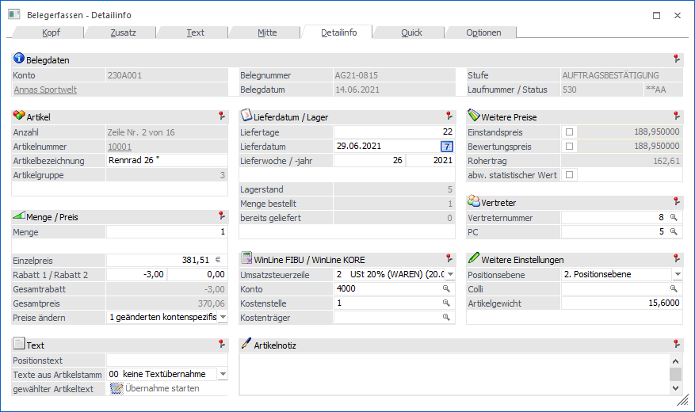
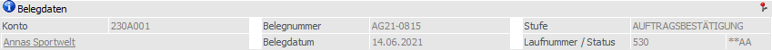
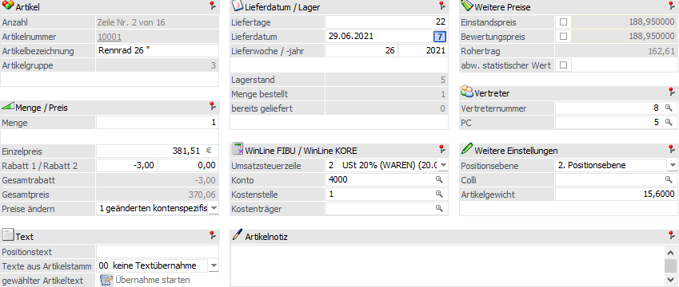
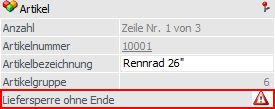
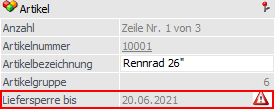
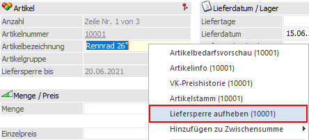
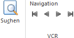

Mit Anwahl des Registers "Detailinfo" wird in die Detailansicht der Belegzeile gewechselt.
Hinweis
Weitere Informationen bezüglich des Erfassens von Belegen und den Buttons des Programms "Belegerfassen" sind dem Kapitel Belegerfassen zu entnehmen.

Folgende Eingabefelder, Einstellungen und Information stehen zur Verfügung:
Belegdaten

Ø Konto
An dieser Stelle wird die Nummer des Hauptkontos (WinLine START - Parameter - FAKT-Parameter - Belege - Allgemein - Option "Hauptkonto für Belege") des aktuellen Belegs angezeigt.
Ø Name
An dieser Stelle wird der Kontoname der Kontonummer dargestellt und das Fenster Kontoinformation kann direkt geöffnet werden.
Ø Belegnummer
An dieser Stelle wird die Belegnummer des Belegs angezeigt.
Ø Belegdatum
Hier wird das Belegdatum des Belegs dargestellt.
Ø Stufe
An dieser Stelle wird die Belegstufe des Belegs angezeigt. Wird ein Beleg in eine nachfolgende Belegstufe gewandelt, so wird hier die "Zielbelegstufe" dargestellt, die Laufnummer stammt hingegen noch vom "Ausgangsbeleg".
Ø Laufnummer/Status
Hier wird die Laufnummer, sowie der Staus des Beleges und dessen Folgestufen angezeigt.
Belegzeile

Folgende Datenfelder werden dargestellt und sind editierbar:
ü Artikelbezeichnung
ü Menge
ü Einzelpreis
ü Rabatt1
ü Rabatt2
ü Preis ändern
ü Text (inkl. Notiz 1-10 & Langtext 1,2)
ü Liefertage
ü Lieferdatum
ü Lieferwoche/Jahr
ü Restmenge ausbuchen (bei Teillieferungen)
ü USt-Zeile
ü Konto
ü Kore-Information (Kostenstelle und Kostenträger)
ü Artikelnotiz
ü Einstandspreis (Durch Aktivieren der Checkbox kann der Einstandspreis für diesen gerade in Bearbeitung stehenden Artikel manuell editiert werden).
ü abw. stat. Wert
Bei Aktivierung
der Checkbox, kann für die Intrastat ein abweichender statistischer Wert
eingetragen werden. Dieser wird mit dem Gesamtbetrag der Zeile, umgerechnet in
Netto und Euro, vorbelegt. Wenn ein abweichender statistischer Wert im Beleg
vorhanden ist, wird dieser in der Intrastat anstelle des Rechnungsbetrages
verwendet.
ü Vertreter
ü Provisionscode
ü Positionsebene / Positionstext
ü Colli
ü Artikelgewicht
Hinweis - Liefersperre
Ist bei dem in der Belegmitte hinterlegten Artikel eine Liefersperre hinterlegt, dann wird in der "Detailinfo" die Liefersperre angezeigt.
ü Liefersperre ohne Enddatum

ü Liefersperre mit Enddatum

Der Status der Liefersperre kann im Register "Detailinfo" über das Kontextmenü editiert werden.

Hinweis - Handelsstücklistenartikeln
Wenn HSL-Komponenten ausgeprägt werden, z.B. für Identnummerartikel beim Lieferscheindruck, wird der Einstandspreis des HSL-Artikels neu errechnet. In diesem Zusammenhang ändert sich die Beschriftung des Feldes (und auch dementsprechend in der Infotabelle unterhalb der Belegmitte) auf die Bezeichnung "Komponentenpreis", um den geänderten Einstandspreis (d.h., für den HSL-Artikel wie im Auftrag erfasst) auszuzeichnen.
ü Bewertungspreis (Einstellung lt. Artikelstamm - Durch Aktivieren der Checkbox kann der Bewertungspreis für diesen gerade in Bearbeitung stehenden Artikel manuell editiert werden.)
Hinweis
Ist als Bewertungspreis einer Handelsstückliste eine andere Option als "lt. FAKT-Parametern" eingestellt, so wird der Bewertungspreis beim Speichern des Stücklistenfensters nur mehr dann ins Belegerfassen zurückgeschrieben, wenn er nicht zuvor manuell geändert wurde, d.h. wenn die Checkbox "ändern" nicht gesetzt ist.
ü Rohertrag (VK-Preis - Bewertungspreis)
ü Texte aus Artikelstamm übernehmen (Aus der Auswahllistbox kann ein Textfeld bestimmt werden, dessen Inhalt in das Notizfeld eingefügt wird. Zur Auswahl aus der Listbox stehen die Notizfelder 1 - 10 sowie die Felder Langtext 1 und Langtext 2. Durch die Einstellung in der Belegart kann hier bereits ein Textfeld vorbelegt sein. Nach Bestätigung des Feldes ist es möglich den Übernehmen-Button anzuwählen, und somit die Übernahme durchzuführen. Es können beliebig viele Texte in das Notizfeld übernommen werden; eingefügt wird immer an markierter Stelle im Notizfeld.)
Sonderbuttons - Register "Detailinfo"

Ø Suchen
Durch Anklicken des Buttons "Suchen" kann mit Hilfe des Fensters Gehe Zu innerhalb des Belegs nach einer Zeilennummer, einer Artikelnummer oder einer Positionsnummer gesucht werden.
Ø VCR-Buttons
Über die so genannten VCR-Buttons kann durch Mausklick zwischen den Belegzeilen geblättert werden.
ü Damit kann die erste Belegzeile angesprochen werden.
ü  Damit kann
die vorherige Belegzeile angesprochen werden.
Damit kann
die vorherige Belegzeile angesprochen werden.
ü  Damit kann
die nächste Belegzeile angesprochen werden.
Damit kann
die nächste Belegzeile angesprochen werden.
ü  Damit kann
die letzte Belegzeile angesprochen werden.
Damit kann
die letzte Belegzeile angesprochen werden.
Hinweis
Beim Blättern zwischen den Belegzeilen werden Ausprägungen standardmäßig "überblättert", d.h. es wird von einem Hauptartikel zum nächsten geblättert. Sollten auch Ausprägungen berücksichtigt werden, so muss beim Blättern zusätzlich die STRG-Taste gedrückt werden.